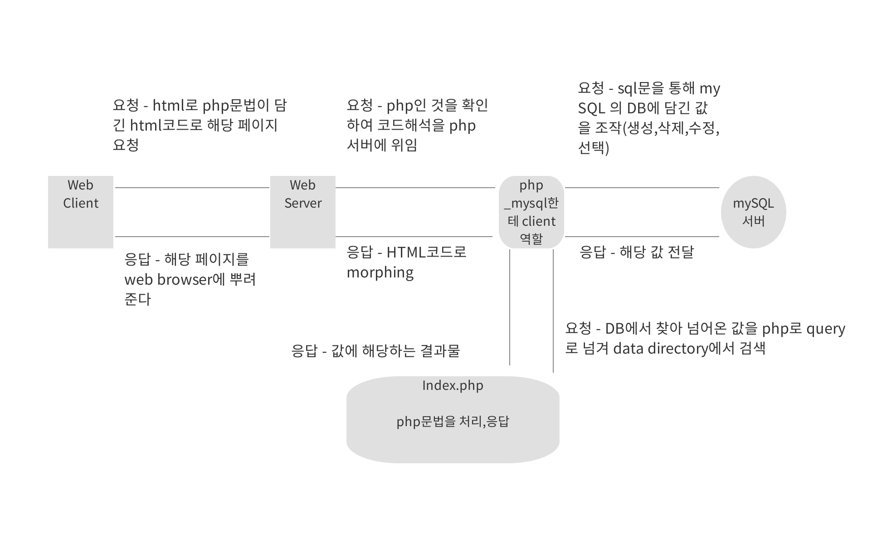

php가 가지고 있는 웹페이지를 효율적으로 만들어 내는 생산성과
mysql이 가지고 있는 빠른 동시성과 접속성으로 db를 관리하는 것을 조합하여
최적의 페이지 관리를 할 수 있다.(back-end server관리)

php - mySQL.
- DB를 사용하기 위해 우리가 로그인을 하는 것처럼 일종의 보안체계를 통과한 후 사용해야 하므로 Connecti이라는 '접속과정'이
필요.
- 사용을 하기 위해 sql문으로 요청하고 그에 해당하는 값을 응답받는 과정이 필요.(query 전달)